Assessment workflow demo: ALB
1 Executive summary
This is a workflow demonstration, not a stock assessment. It uses ALB outputs to demonstrate the model-to-report tools. The diagnostic-model figures use the archived MFCL-compatible KIMSA fit from job 24781. Stepwise, starting-value, self-test, retrospective, sensitivity, ensemble, profile and additional-output figures use illustrative display values to demonstrate report construction. They are not new assessment estimates.
Replace the illustrative study bundles with fitted results, write the assessment interpretation in the section files, and update the report cover before submission.
2 Introduction
3 Data compilation
The diagnostic model retains the ALB observation timing and two-region structure. Catch, abundance-index, length-composition and conditional age-at-length observations are available in the interactive diagnostic supplement.
Table 2 describes the fishery roles and observation periods. Figure 6 shows data availability. Index observations and predictions follow the model likelihood’s geometric-mean centering convention.
4 Model description
The archived ALB fit uses the MFCL-compatible age-region state, age-based selectivity and five-pass hybrid F, without tagging. Its original F upper bound of 3 is retained for reproduction; new model specifications default to 6.
Length compositions use square_fita with fishery divisors and a raw-record sample-size cap of 1000. The composition settings table records the fitted likelihood configuration.
Figure 13, Figure 14 and Figure 15 describe the biological inputs and estimates; Figure 40 shows fishery selectivity. Additional-format panels illustrate output types that are not estimated by this tag-free ALB reference model.
5 Model development
Figure 16 illustrates how model-development results are assembled. Each study retains its model definitions and change descriptions. Replace the example model collections with the actual development sequence before interpreting the differences.
6 Results
Figure 39 shows annual reference-model trajectories. Stocks use time-weighted annual means; recruitment and catches use annual totals. Depletion is the ratio of annual spawning-potential summaries. Index points and predictions use annual geometric means. The interactive viewer retains the original time resolution.
Length-residual panels retain the original fitted records and their compressed-tail support. Conditional age-at-length fits are pooled by region using raw sample counts, preserving the model’s prediction scale.
Index fits and residuals (Figure 77, Figure 18), length-composition residuals and conditional age-at-length fits (Figure 26) are generated from the same result bundle used by the interactive viewer.
The following studies demonstrate the intended diagnostic presentation: starting-value trials (Figure 27), simulation-estimation recovery (Figure 30), retrospective analysis (Figure 32), objective profiles (Figure 33) and sensitivity comparisons. Their displayed values are illustrative.
7 Reporting examples
The ensemble, management-quantity and projection panels demonstrate the reporting formats. They do not establish ALB stock status. Supply actual reference points, model retention decisions, uncertainty draws and projection results before writing management conclusions.
8 Discussion
9 Tables
| Resource | Purpose |
|---|---|
| Numeric display fixture | Demonstrate reporting inputs |
| Fishery | Region | Role | First year | Last year | Unit |
|---|---|---|---|---|---|
| 1 | 1 | Catch | 1954 | 2022 | fish |
| 2 | 1 | Catch | 1954 | 2022 | fish |
| 3 | 1 | Catch | 1954 | 2022 | fish |
| 4 | 1 | Catch | 1954 | 2022 | fish |
| 5 | 1 | Catch | 1992 | 2022 | fish |
| 6 | 1 | Catch | 1982 | 2022 | fish |
| 7 | 1 | Catch | 1987 | 2022 | fish |
| 8 | 1 | Catch | 1954 | 2022 | fish |
| 9 | 1 | Catch | 1984 | 2022 | fish |
| 10 | 1 | Catch | 1985 | 2022 | fish |
| 11 | 1 | Catch | 1982 | 2022 | t |
| 12 | 1 | Catch | 1987 | 2022 | t |
| 13 | 1 | Catch | 1983 | 1990 | t |
| 14 | 2 | Catch | 1957 | 2022 | fish |
| 15 | 2 | Catch | 1961 | 2021 | fish |
| 16 | 2 | Catch | 1963 | 2021 | fish |
| 17 | 2 | Catch | 1986 | 2006 | t |
| 18 | 1 | Index | 1954 | 2022 | relative index |
| 19 | 1 | Index | 1992 | 2022 | relative index |
| 20 | 2 | Index | 1954 | 2022 | relative index |
| Fishery | Likelihood | Group | Theta |
|---|---|---|---|
| Fishery A | dirichlet_multinomial | 1 | 20 |
| Group | Fishery |
|---|---|
| 1 | Fishery A |
| Programme | Region | Mixing |
|---|---|---|
| Programme A | Region 1 | Two supplied model periods |
| Parameter | Estimate | Lower | Upper |
|---|---|---|---|
| Steepness | 0.7 | 0.2 | 0.99 |
| Parameter | Partner | Correlation |
|---|---|---|
| log R0 | Index q | -0.65 |
| Quantity | Period | Estimate | Lower | Upper |
|---|---|---|---|---|
| \(SB/SB_{F=0}\) | 2016–2020 | 0.45 | 0.35 | 0.55 |
| Period | Reference | Ratio |
|---|---|---|
| 2016–2020 | 2012–2015 | 0.95 |
| Condition | Probability |
|---|---|
| \(F/F_{MSY}\) > 1 | 0.05 |
| Quantity | Estimate | Unit | Definition |
|---|---|---|---|
| \(SB_{MSY}\) | 1e+06 | t | Spawning potential at MSY |
| Source | Quantity | Lower | Upper |
|---|---|---|---|
| Supplied illustrative quantiles | \(SB/SB_{F=0}\) | 0.35 | 0.55 |
| Scenario | Period | Quantity | Median |
|---|---|---|---|
| Reference catch | 2031–2040 | \(SB/SB_{F=0}\) | 0.45 |
| Model | Parent | Change |
|---|---|---|
| alb | NA | No change description supplied |
| Model | Label | Status | Passed | Failed | Unknown |
|---|---|---|---|---|---|
| alb | ALB reference | passed | 3 | 0 | 0 |
| Fishery | Likelihood | Divisor | Record cap | Epsilon scale | Flag161 |
|---|---|---|---|---|---|
| 3 | square_fita | 51 | 1000 | 1 | 0 |
| 4 | square_fita | 164 | 1000 | 1 | 0 |
| 6 | square_fita | 89 | 1000 | 1 | 0 |
| 7 | square_fita | 29 | 1000 | 1 | 0 |
| 8 | square_fita | 372 | 1000 | 1 | 0 |
| 9 | square_fita | 212 | 1000 | 1 | 0 |
| 10 | square_fita | 125 | 1000 | 1 | 0 |
| 11 | square_fita | 27 | 1000 | 1 | 0 |
| 12 | square_fita | 37 | 1000 | 1 | 0 |
| 13 | square_fita | 358 | 1000 | 1 | 0 |
| 14 | square_fita | 123 | 1000 | 1 | 0 |
| 15 | square_fita | 241 | 1000 | 1 | 0 |
| 16 | square_fita | 450 | 1000 | 1 | 0 |
| 17 | square_fita | 1 | 1000 | 1 | 0 |
| 18 | square_fita | 746 | 1000 | 1 | 0 |
| 19 | square_fita | 55 | 1000 | 1 | 0 |
| 20 | square_fita | 61 | 1000 | 1 | 0 |
| Kind | Series | First | Last | N |
|---|---|---|---|---|
| catch | F1_R1 | 1954 | 2022 | 274 |
| catch | F10_R1 | 1985 | 2022 | 147 |
| conditional_age | F10_R1 | 2010 | 2010 | 17 |
| length | F10_R1 | 1989 | 2016 | 74 |
| catch | F11_R1 | 1982 | 2022 | 344 |
| conditional_age | F11_R1 | 2006 | 2010 | 63 |
| length | F11_R1 | 1996 | 2022 | 143 |
| catch | F12_R1 | 1987 | 2022 | 161 |
| length | F12_R1 | 1987 | 1998 | 27 |
| catch | F13_R1 | 1983 | 1990 | 17 |
| length | F13_R1 | 1988 | 1989 | 2 |
| catch | F14_R2 | 1957 | 2022 | 262 |
| length | F14_R2 | 1966 | 2022 | 119 |
| catch | F15_R2 | 1961 | 2021 | 229 |
| length | F15_R2 | 1968 | 2021 | 65 |
| catch | F16_R2 | 1963 | 2021 | 195 |
| length | F16_R2 | 1968 | 2021 | 17 |
| catch | F17_R2 | 1986 | 2006 | 22 |
| length | F17_R2 | 1992 | 1992 | 1 |
| length | F18_R1 | 1965 | 2022 | 57 |
| index | F18_R1_G18 | 1954 | 2022 | 69 |
| length | F19_R1 | 1997 | 2022 | 25 |
| index | F19_R1_G19 | 1992 | 2022 | 31 |
| catch | F2_R1 | 1954 | 2022 | 274 |
| length | F20_R2 | 1966 | 2018 | 39 |
| index | F20_R2_G20 | 1954 | 2022 | 69 |
| catch | F3_R1 | 1954 | 2022 | 275 |
| conditional_age | F3_R1 | 2009 | 2009 | 4 |
| length | F3_R1 | 1965 | 2022 | 178 |
| catch | F4_R1 | 1954 | 2022 | 274 |
| length | F4_R1 | 1965 | 2022 | 145 |
| catch | F5_R1 | 1992 | 2022 | 121 |
| catch | F6_R1 | 1982 | 2022 | 161 |
| conditional_age | F6_R1 | 2009 | 2010 | 81 |
| length | F6_R1 | 1992 | 2022 | 116 |
| catch | F7_R1 | 1987 | 2022 | 135 |
| conditional_age | F7_R1 | 2009 | 2010 | 30 |
| length | F7_R1 | 1993 | 2013 | 25 |
| catch | F8_R1 | 1954 | 2022 | 271 |
| conditional_age | F8_R1 | 2010 | 2010 | 15 |
| length | F8_R1 | 1965 | 2022 | 89 |
| catch | F9_R1 | 1984 | 2022 | 126 |
| conditional_age | F9_R1 | 2007 | 2013 | 45 |
| length | F9_R1 | 1999 | 2020 | 17 |
| Index | N | Log RMSE | First-decade RMSE |
|---|---|---|---|
| 18 | 69 | 0.180 | 0.269 |
| 19 | 31 | 0.349 | 0.502 |
| 20 | 69 | 0.209 | 0.127 |
| Model | Parent | Change |
|---|---|---|
| initial | Initial configuration | |
| data-update | initial | Update observations |
| biology-update | data-update | Update biological assumptions |
| reference | biology-update | Select diagnostic configuration |
| Model | Label | Status | Passed | Failed | Unknown |
|---|---|---|---|---|---|
| initial | Initial | passed | 3 | 0 | 0 |
| data-update | Data update | passed | 3 | 0 | 0 |
| biology-update | Biology update | passed | 3 | 0 | 0 |
| reference | Reference | passed | 3 | 0 | 0 |
| Kind | Series | First | Last | N |
|---|---|---|---|---|
| index | F18_R1_G18 | 1954 | 2022 | 69 |
| index | F19_R1_G19 | 1992 | 2022 | 31 |
| index | F20_R2_G20 | 1954 | 2022 | 69 |
| Model | Parent | Change |
|---|---|---|
| reference | NA | No change description supplied |
| trial-1 | NA | No change description supplied |
| trial-2 | NA | No change description supplied |
| trial-3 | NA | No change description supplied |
| trial-4 | NA | No change description supplied |
| trial-5 | NA | No change description supplied |
| trial-6 | NA | No change description supplied |
| trial-7 | NA | No change description supplied |
| trial-8 | NA | No change description supplied |
| Model | Label | Status | Passed | Failed | Unknown |
|---|---|---|---|---|---|
| reference | Reference | passed | 3 | 0 | 0 |
| trial-1 | Trial 1 | passed | 3 | 0 | 0 |
| trial-2 | Trial 2 | passed | 3 | 0 | 0 |
| trial-3 | Trial 3 | passed | 3 | 0 | 0 |
| trial-4 | Trial 4 | passed | 3 | 0 | 0 |
| trial-5 | Trial 5 | passed | 3 | 0 | 0 |
| trial-6 | Trial 6 | passed | 3 | 0 | 0 |
| trial-7 | Trial 7 | passed | 3 | 0 | 0 |
| trial-8 | Trial 8 | failed | 2 | 1 | 0 |
| Kind | Series | First | Last | N |
|---|---|---|---|---|
| index | F18_R1_G18 | 1954 | 2022 | 69 |
| index | F19_R1_G19 | 1992 | 2022 | 31 |
| index | F20_R2_G20 | 1954 | 2022 | 69 |
| Model | Parent | Change |
|---|---|---|
| truth | NA | No change description supplied |
| replicate-1 | NA | No change description supplied |
| replicate-2 | NA | No change description supplied |
| replicate-3 | NA | No change description supplied |
| replicate-4 | NA | No change description supplied |
| replicate-5 | NA | No change description supplied |
| Model | Label | Status | Passed | Failed | Unknown |
|---|---|---|---|---|---|
| truth | Generating truth | passed | 3 | 0 | 0 |
| replicate-1 | Refit 1 | passed | 3 | 0 | 0 |
| replicate-2 | Refit 2 | passed | 3 | 0 | 0 |
| replicate-3 | Refit 3 | passed | 3 | 0 | 0 |
| replicate-4 | Refit 4 | passed | 3 | 0 | 0 |
| replicate-5 | Refit 5 | passed | 3 | 0 | 0 |
| Kind | Series | First | Last | N |
|---|---|---|---|---|
| index | F18_R1_G18 | 1954 | 2022 | 69 |
| index | F19_R1_G19 | 1992 | 2022 | 31 |
| index | F20_R2_G20 | 1954 | 2022 | 69 |
| Model | Parent | Change |
|---|---|---|
| reference | NA | No change description supplied |
| peel-1 | NA | No change description supplied |
| peel-2 | NA | No change description supplied |
| peel-3 | NA | No change description supplied |
| peel-4 | NA | No change description supplied |
| peel-5 | NA | No change description supplied |
| Model | Label | Status | Passed | Failed | Unknown |
|---|---|---|---|---|---|
| reference | Reference | passed | 3 | 0 | 0 |
| peel-1 | Peel 1 | passed | 3 | 0 | 0 |
| peel-2 | Peel 2 | passed | 3 | 0 | 0 |
| peel-3 | Peel 3 | passed | 3 | 0 | 0 |
| peel-4 | Peel 4 | passed | 3 | 0 | 0 |
| peel-5 | Peel 5 | passed | 3 | 0 | 0 |
| Kind | Series | First | Last | N |
|---|---|---|---|---|
| index | F18_R1_G18 | 1954 | 2022 | 69 |
| index | F19_R1_G19 | 1992 | 2022 | 31 |
| index | F20_R2_G20 | 1954 | 2022 | 69 |
| Model | Parent | Change |
|---|---|---|
| reference | NA | No change description supplied |
| lower | NA | No change description supplied |
| upper | NA | No change description supplied |
| Model | Label | Status | Passed | Failed | Unknown |
|---|---|---|---|---|---|
| reference | Reference | passed | 3 | 0 | 0 |
| lower | Lower | passed | 3 | 0 | 0 |
| upper | Upper | passed | 3 | 0 | 0 |
| Kind | Series | First | Last | N |
|---|---|---|---|---|
| index | F18_R1_G18 | 1954 | 2022 | 69 |
| index | F19_R1_G19 | 1992 | 2022 | 31 |
| index | F20_R2_G20 | 1954 | 2022 | 69 |
| Model | Parent | Change |
|---|---|---|
| reference | NA | No change description supplied |
| member-1 | NA | No change description supplied |
| member-2 | NA | No change description supplied |
| member-3 | NA | No change description supplied |
| member-4 | NA | No change description supplied |
| member-5 | NA | No change description supplied |
| member-6 | NA | No change description supplied |
| Model | Label | Status | Passed | Failed | Unknown |
|---|---|---|---|---|---|
| reference | Reference | passed | 3 | 0 | 0 |
| member-1 | Member 1 | passed | 3 | 0 | 0 |
| member-2 | Member 2 | passed | 3 | 0 | 0 |
| member-3 | Member 3 | passed | 3 | 0 | 0 |
| member-4 | Member 4 | passed | 3 | 0 | 0 |
| member-5 | Member 5 | passed | 3 | 0 | 0 |
| member-6 | Member 6 | passed | 3 | 0 | 0 |
| Kind | Series | First | Last | N |
|---|---|---|---|---|
| index | F18_R1_G18 | 1954 | 2022 | 69 |
| index | F19_R1_G19 | 1992 | 2022 | 31 |
| index | F20_R2_G20 | 1954 | 2022 | 69 |
| Model | Parent | Change |
|---|---|---|
| profiles | NA | No change description supplied |
| Model | Label | Status | Passed | Failed | Unknown |
|---|---|---|---|---|---|
| profiles | Illustrative objective profiles | unknown | 0 | 0 | 0 |
| Kind | Series | N |
|---|
| Model | Parent | Change |
|---|---|---|
| formats | NA | No change description supplied |
| Model | Label | Status | Passed | Failed | Unknown |
|---|---|---|---|---|---|
| formats | Illustrative reporting inputs | unknown | 0 | 0 | 1 |
| Fishery | Likelihood | Group | Theta |
|---|---|---|---|
| Fishery A | dirichlet_multinomial | 1 | 20 |
| Fishery | Unit | Region |
|---|---|---|
| Longline | fish | Region 1 |
| Purse seine | fish | Region 1 |
| Other | fish | Region 1 |
| Kind | Series | N |
|---|
10 Figures

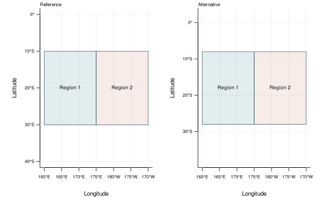


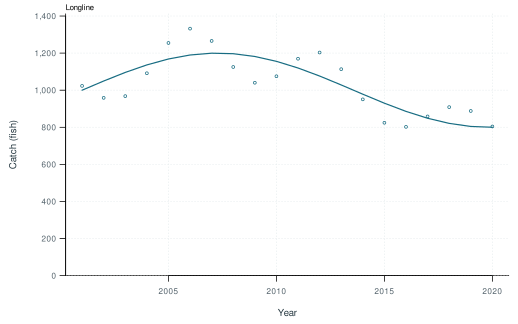
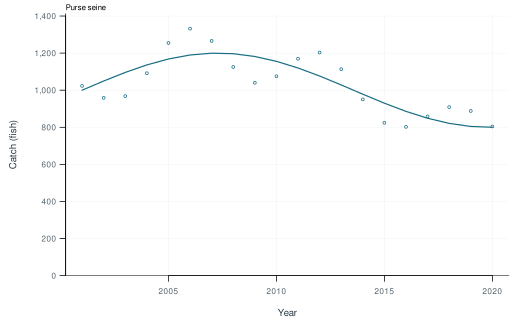
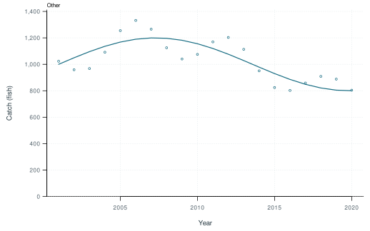


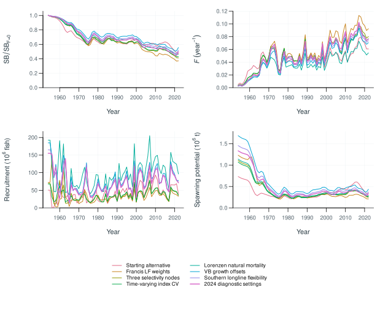
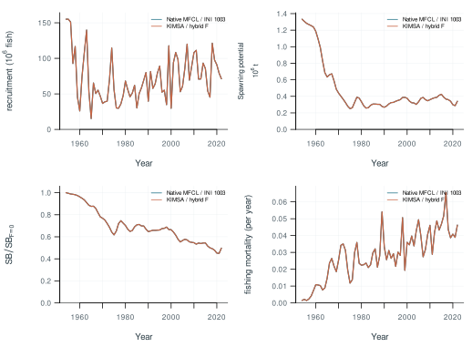

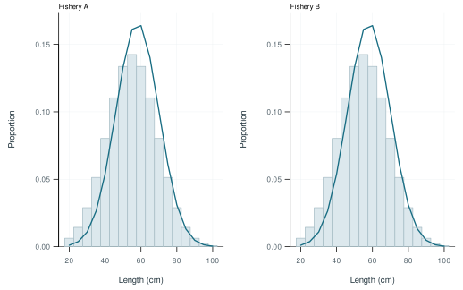


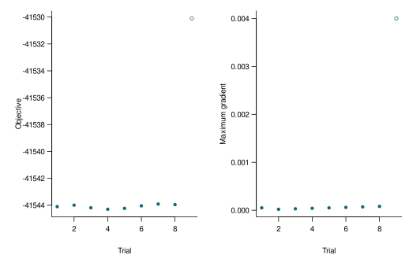
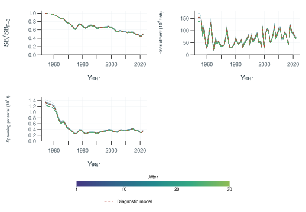
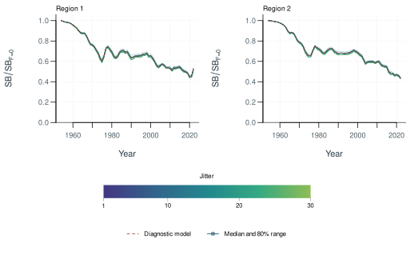


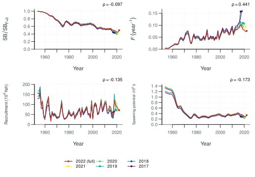


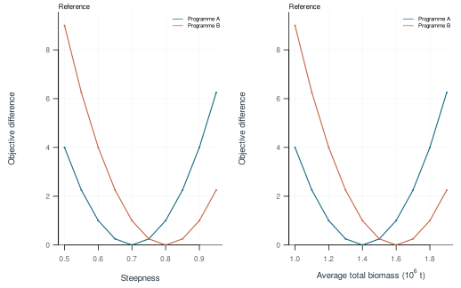


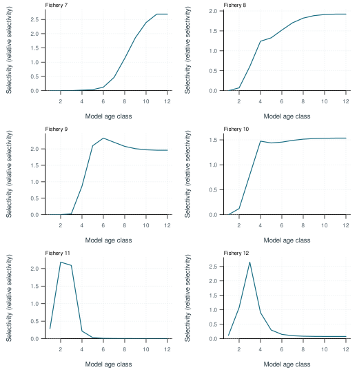
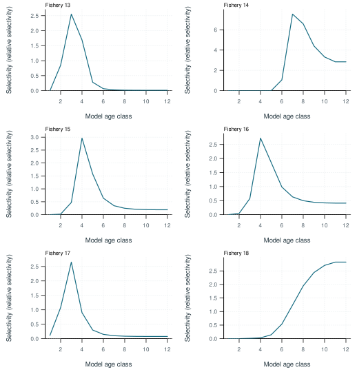
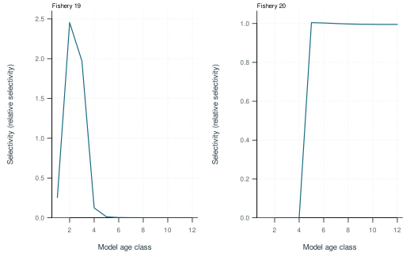


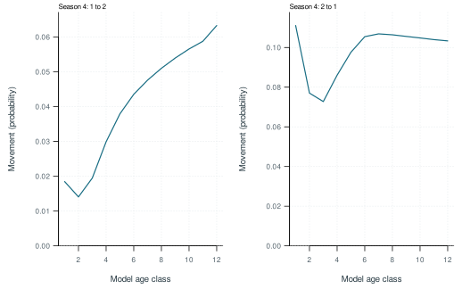


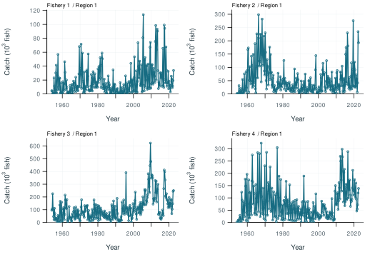
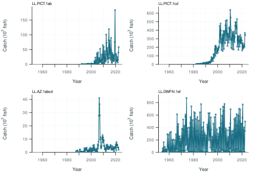
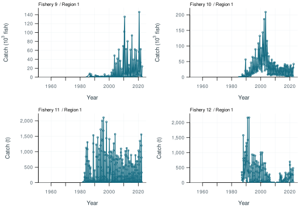


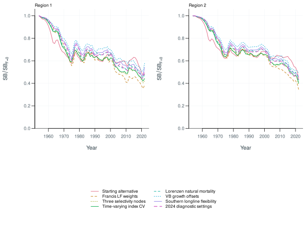

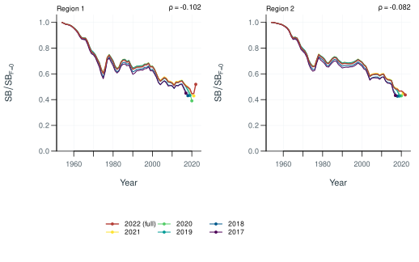


11 Supplementary outputs
ALB · Diagnostic model interactive comparison
ALB · Diagnostic model figures and tables
ALB · Stepwise development interactive comparison
ALB · Stepwise development figures and tables
ALB · Starting-value trials interactive comparison
ALB · Starting-value trials figures and tables
ALB · Self-test recovery interactive comparison
ALB · Self-test recovery figures and tables
ALB · Retrospective analysis interactive comparison
ALB · Retrospective analysis figures and tables
ALB · Sensitivities interactive comparison
ALB · Sensitivities figures and tables
ALB · Uncertainty ensemble interactive comparison
ALB · Uncertainty ensemble figures and tables
Objective profiles · Display example interactive comparison
Objective profiles · Display example figures and tables
Additional output formats · Display examples interactive comparison
Additional output formats · Display examples figures and tables